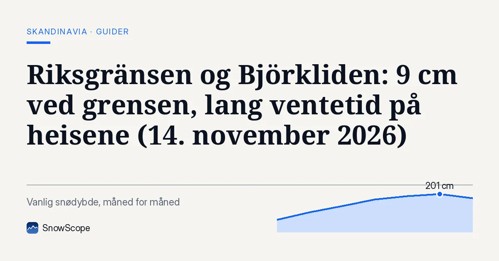
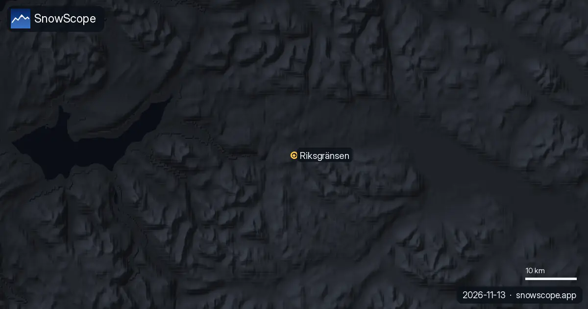

Riksgränsen og Björkliden: 9 cm ved grensen, lang ventetid på heisene (14. november 2026)
Oppe ved norskegrensen, godt nord for polarsirkelen, har vinteren startet stille. Værstasjonen i Katterjåkk, 2 km fra Riksgränsen på 514 m, målte 9 cm snø morgenen 13. november. Nede i Abisko, på 392 m og 8 km fra Björkliden, var målingen 2 cm. Ingen av skianleggene er åpne, og det er normalt: begge kjører heisene fra seinvinteren og inn i våren, når sola er tilbake.
Se snøprognosen for Riksgränsen direkte i SnowScope-appenSnødybde, puddervarsler og 3D-kartet, gratis.

Hva stasjonene sier
Katterjåkk gikk fra bar bakke til 10 cm 10. november og har ligget rundt det siden: 11 cm, så 9 cm, så 9 cm. Den manuelle stasjonen ved siden av meldte 14 cm 12. november. Abisko, i regnskyggen på den tørre siden av fjellene, har aldri hatt mer enn 2 cm denne måneden.
Den forskjellen er typisk. Riksgränsen ligger rett på vannskillet og får Atlanterhavssnøen først; Björkliden og Abisko ligger lenger øst, der lufta allerede har sluppet det meste av fuktigheten.

Uka som kommer
Vår prognose for de neste sju dagene gir rundt 9 cm på toppen i Riksgränsen (900 m) og rundt 11 cm i bunnen (516 m); i Björkliden rundt 8 cm på toppen (933 m) og 7 cm i bunnen. Andre prognoser spenner fra 6 til 19 cm på toppen i Riksgränsen. Det holder seg kaldt: ikke regn i noen høyde, og snø helt ned til sjøene.
Så dypt pleier det å være nå
Våre 46 tidligere vintrer gir Riksgränsen en vanlig snødybde på 46 cm i bunnen og 65 cm på toppen 14. november, og 81 og 99 cm innen 15. desember. Björkliden er tørrere: 28 cm i bunnen og 56 cm på toppen 14. november. Stasjonene viser at denne novemberen så langt er klart tynnere enn vanlig.
Den lange tidsserien for Riksgränsen har ikke mistet snø: største snødybde på toppen i en middels vinter var 221 cm de første 15 vintrene og 224 cm de siste 15. Björkliden er også stabilt, 168 cm og 165 cm.
Når heisene åpner
Riksgränsens offisielle vintersesong 2027 varer fra 18. februar til 23. mai; Björklidens fra 4. februar til 2. mai. Fram til da står sola knapt opp her, og derfor venter begge stedene på lyset, ikke på snøen. Når de åpner, har en middels vinter godt over en meter på toppen i Riksgränsen.
Tips til skiløpere
- Kommer du for nordlyset eller en vintertur nå? Regn med tynt snødekke og svært korte dager; snøen er ingen grunn til å avlyse, lyset er den største begrensningen.
- Snaufjellet rundt Katterjåkk og Abisko er skredterreng enkelte steder selv med lite snø; hold deg på merkede stier i mørketida.
- E10 over grensen kan stenge i uvær. Sjekk veimeldingene før du kjører.
Flere kart (eksterne nettsteder)
Referanser og kilder
- SMHI, åpne data: daglig snødybde på svenske værstasjoner www.smhi.se/data/meteorologi/ladda-ner-meteorologiska-observationer
- Riksgränsen, offisiell side: åpningsdatoer og heisstatus, lest 2026-11-13 riksgransen.se/om-oss/oppettider-vintersasong/
- Björkliden, offisiell side: åpningsdatoer og heisstatus, lest 2026-11-13 bjorkliden.com/om-oss/oppettider-vintersasong/
- Lavinprognoser, snøskredvarsler for de svenske fjellene www.lavinprognoser.se/
Om tallene
Målt snø: morgenmålinger 13. november 2026 ved de offisielle værstasjonene i Sverige (SMHI åpne data), Finland (FMI åpne data, CC BY 4.0) og Norge (MET Norways stasjonsrapporter, CC BY 4.0, publisert av Ogimet). Norges nasjonale snøkart seNorge (NVE og MET Norway, NLOD) gir anslagene på et rutenett på 1 km for bakkene. Våre tall: SnowScopes prognose for de neste sju dagene i tre høyder i skisenteret, sammenlignet med uavhengige prognoser (ECMWF, ICON, GFS, GEM) for 14. til 20. november; snøhistorikk for 46 tidligere vintre (1980-81 til 2025-26), en modell av fortiden korrigert for høyde. Åpningsdatoer: skisentrenes egne sider, lest 13. november 2026. Løypelengde og antall heiser: kartlegging i OpenSkiMap.
Offisielle snøskredvarsler: Lavinprognoser (SE) / Varsom (NO)
Siter denne rapporten
For forskning, undervisning eller presse: tallene og diagrammene kan brukes fritt under CC BY 4.0 med denne kildehenvisningen.
SnowScope (2026), Riksgränsen og Björkliden: 9 cm ved grensen, lang ventetid på heisene (14. november 2026), https://snowscope.app/blog/nb/2026/11/riksgransen-bjorkliden-snow-report-14-november-2026.html, hentet 2026-11-14
SnowScope (Atlas Labs). (2026, November 14). Riksgränsen og Björkliden: 9 cm ved grensen, lang ventetid på heisene (14. november 2026). SnowScope snow reports. https://snowscope.app/blog/nb/2026/11/riksgransen-bjorkliden-snow-report-14-november-2026.html
BibTeX
@misc{snowscope2026riksgransenbjorklidensno,
author = {{SnowScope (Atlas Labs)}},
title = {Riksgränsen og Björkliden: 9 cm ved grensen, lang ventetid på heisene (14. november 2026)},
year = {2026},
month = nov,
howpublished = {\url{https://snowscope.app/blog/nb/2026/11/riksgransen-bjorkliden-snow-report-14-november-2026.html}},
note = {Published 2026-11-14 16:49 UTC; accessed 2026-11-14}
}· CC BY 4.0 · Metoder, data og verktøy →
Riksgränsen: snø og temperatur etter høyde, i vinter sammenlignet med i fjor (verktøy) →
Følg Riksgränsen
Gratis: en melding når nysnø er på vei, og prognosen hver morgen.